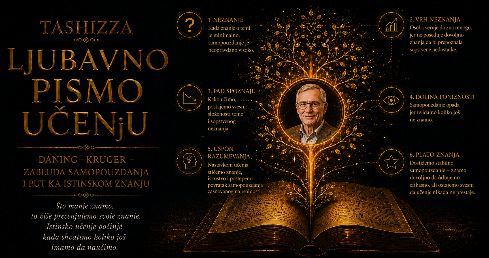

Ljubavno pismo učenju

Među svim oblicima neznanja, Dejvida Daninga najviše je privlačio onaj koji ne ostavlja jasan osećaj praznine. Kada čovek zna da nešto ne razume, njegovo neznanje već sadrži početak izlaza: može da pita, proveri, potraži učitelja ili privremeno odustane od zaključka. Mnogo složenija teškoća nastaje kada mu nedostaje upravo ono znanje pomoću kojeg bi prepoznao sopstvenu grešku. On tada ne zastaje pred prazninom u razumevanju, nego kroz nju posmatra svet, uveren da pred sobom ima celovitu sliku.
Daning je veliki deo naučnog života posvetio pitanju kako ljudi procenjuju sopstvene sposobnosti, znanje, karakter i odluke kada za tu procenu moraju da koriste isti um čiju pouzdanost pokušavaju da provere. Njegovo istraživanje nije polazilo od udobne pretpostavke da su slepe tačke osobina nekih naročito nerazumnih ljudi. Zanimalo ga je kako obrazovana, savesna i inteligentna osoba može da pogreši, a zatim ostane bez unutrašnjeg upozorenja da je njen zaključak nepouzdan. Upravo takvo pitanje vraća problem svakom čitaocu, jer nas podseća da sopstvene granice ne posmatramo sa neutralnog mesta izvan sebe.
Rođen 1960. godine u Sjedinjenim Američkim Državama, Daning je 1982. završio studije psihologije na Državnom univerzitetu Mičigen, a četiri godine kasnije doktorirao na Stanfordu. Njegov mentor bio je Li Ros, jedan od najuticajnijih istraživača društvenog prosuđivanja i čovekovog potcenjivanja moći okolnosti. U takvom intelektualnom okruženju Daning je učio da greške mišljenja ne posmatra kao nasumične kvarove, već kao pojave sa prepoznatljivim uzrocima. Ljudi zaključuju na osnovu dostupnih podataka, iskustava i očekivanja, dok praznine u tim podacima retko ostaju jasno obeležene kao mesta na kojima bi trebalo biti oprezan.
Akademsku karijeru započeo je 1986. godine na Univerzitetu Kornel, gde će provesti gotovo tri decenije i razviti širok istraživački program o samoproceni, društvenom sudu, neznanju, moralnoj slici o sebi i poverenju. Univerzitet je bio naročito podsticajno mesto za takva pitanja, jer se u njemu neprestano ukrštaju znanje i procena znanja. Studenti ocenjuju koliko su spremni za ispit, profesori prosuđuju kvalitet njihovog rada, istraživači procenjuju snagu sopstvenih dokaza, a naučni časopisi odlučuju koje tvrdnje mogu izdržati stručnu proveru. Akademska kultura raspolaže brojnim mehanizmima ispravljanja, ali ni ona ne oslobađa pojedinca od slepih tačaka.
Daning je rano uočio paradoks samoprocene: da bismo prepoznali kvalitet sopstvenog rada, moramo posedovati bar deo iste stručnosti koja nam je potrebna da taj rad dobro obavimo. Osoba koja ne poznaje pravila gramatike teže će uočiti gramatičku grešku, dok će slabije razvijeno logičko rasuđivanje istovremeno proizvoditi nepouzdan zaključak i otežavati njegovu proveru. Neznanje pritom ne izaziva obavezno nelagodnost. Pogrešan odgovor može delovati potpuno prirodno osobi koja ne poznaje razlog zbog kojeg bi trebalo da posumnja u njega.
U istoriju njegovog najpoznatijeg istraživanja ušla je vest iz 1995. godine o Mekarturu Vileru, čoveku koji je opljačkao dve banke u Pitsburgu bez maske, verujući da će limunov sok učiniti njegovo lice nevidljivim sigurnosnim kamerama. Vest je nudila lak povod za podsmeh, ali je Daningu otvorila ozbiljnije pitanje: kako čovek može da proverava očigledno neodrživu zamisao i ipak ne raspolaže merilima koja bi mu pokazala njenu apsurdnost? Ekstremnost slučaja osvetlila je mnogo običniju pojavu, prisutnu svaki put kada nedostatak znanja skriva složenost problema koji pokušavamo da rešimo.
Sa mladim istraživačem Džastinom Krugerom Daning je to pitanje pretvorio u četiri eksperimentalne studije, objavljene 1999. godine pod naslovom „Nestručni i nesvesni toga”. Učesnici su rešavali zadatke iz humora, gramatike i logičkog rasuđivanja, a zatim procenjivali koliko su bili uspešni i kako se njihov rezultat poredi sa učinkom drugih. Najslabiji učesnici pokazali su najveći raskorak između rezultata i samoprocene, dok je dodatna obuka u jednom delu istraživanja poboljšala i njihovo rasuđivanje i sposobnost da uoče slabosti prethodnog rada.
Iz te studije nastao je izraz koji će Daningovo prezime učiniti poznatim daleko izvan akademskog sveta. Popularna kultura pretvorila je Daning–Krugerov efekat u objašnjenje za glasne neznalice, loše rukovodioce, površne komentatore i samouverene protivnike u raspravi. Takva upotreba promašuje onu stranu Daningovog rada koja najviše uznemirava: svako od nas ima područja u kojima ne zna dovoljno da bi pouzdano procenio sopstveno znanje. Čovek koji pojam koristi samo da bi opisao druge ponavlja problem pred kojim ga je istraživanje upozorilo.
Daning je nastavio da proučava ono što je nazivao meta-neznanjem, odnosno neznanjem o sopstvenom neznanju. Posebno ga je zanimalo zašto ljudi tvrde da poznaju pojmove koji su izmišljeni, zbog čega svoje postupke procenjuju prema namerama dok tuđe češće mere posledicama i kako povoljna slika o sopstvenom karakteru opstaje čak i kada ponašanje pruža razloga za sumnju. U tim istraživanjima vraćao se saznanju da um ne raspolaže potpunim inventarom sopstvenih praznina. On radi sa onim što mu je dostupno, dok ono što nedostaje često ne ulazi ni u procenu.
Njegov rad o preteranom tvrđenju znanja naročito jasno pokazuje tu pojavu. Kada se od ljudi traži da procene koliko poznaju određenu oblast, neki će potvrditi da su upoznati i sa izmišljenim terminima, naročito ako sebe već smatraju stručnim. Takav odgovor ne mora biti svesna laž. Ugled pojma, poznati delovi izraza i prethodno uverenje u sopstveno znanje mogu proizvesti osećaj prepoznavanja, posle čega čovek taj osećaj protumači kao sećanje. Samouverenost tada popunjava prazninu brže nego pažljiva provera.
Daninga je zanimala i moralna slika koju ljudi grade o sebi. Većina želi da veruje da je poštena, pravična i dobronamerna, pa svoje postupke tumači kroz namere koje su drugima nevidljive. Kada nekoga povredimo, sećamo se da to nismo želeli; kada neko povredi nas, pred sobom imamo posledicu i mnogo manje pristupa njegovim unutrašnjim razlozima. Tako isti čovek može sebi priznavati složenost okolnosti, a tuđi postupak svesti na crtu karaktera. Samopoznavanje, koje na prvi pogled deluje kao prednost, ponekad postaje izvor blaže presude prema sebi.
Širinu Daningovog rada pokazuje i njegovo interesovanje za poverenje. Ljudsko društvo ne može funkcionisati ako svaki odnos počinje potpunom proverom tuđih namera, ali nas ista spremnost da verujemo čini ranjivim pred obmanom. Daning je proučavao zbog čega ljudi često ne prepoznaju laž, ukazujući da problem ne leži samo u nesavršenom opažanju izraza lica ili glasa. Svakodnevni razgovor podrazumeva početnu pretpostavku iskrenosti, jer bi neprestana sumnja razorila saradnju. Poverenje tako istovremeno predstavlja osnovu društvenog života i mesto njegove ranjivosti.
Posle dugog rada na Kornelu, Daning je nastavio karijeru na Univerzitetu Mičigen. Njegov profesionalni put obuhvatio je istraživanje, nastavu, knjige, stručne preglede i javna predavanja, ali je njegov privatni život ostao izvan detaljne javne biografije. Takvu granicu valja poštovati umesto popunjavati je pretpostavkama. O čoveku se u ovom slučaju najpouzdanije može govoriti kroz pitanja kojima se vraćao, kroz humor sa kojim je iznosio neprijatne nalaze o ljudskoj vrsti i kroz odsustvo prezira prema ljudima čije je greške proučavao.
U Daningovim javnim nastupima problem neznanja retko postaje prilika za nadmoć. Njegov humor ublažava nelagodnost, ali ostavlja netaknutom najvažniju pouku: istraživač ne stoji izvan pojave koju istražuje. Naučna stručnost može smanjiti određene greške u okviru jedne oblasti, ali ne daje čoveku opštu zaštitu od preterane sigurnosti. Ugled čak može otvoriti novu slepu tačku kada stručnjak počne da veruje da sposobnost iz jednog područja automatski važi i u drugom.
Kasnija metodološka preispitivanja Daning–Krugerovog efekta donela su kritike prvobitnog načina merenja, ukazujući na regresiju ka proseku, ograničenja skale i teškoće procenjivanja relativnog položaja. Daningov odgovor na takve rasprave pripada najboljoj tradiciji nauke: popularnost jedne ideje ne oslobađa je obaveze da bude ponovo proveravana, razlagana i preciznije objašnjena. Deo klasičnog obrasca može biti pojačan statističkim postupcima, dok problem slabije metakognitivne tačnosti u područjima nedovoljnog znanja ostaje predmet ozbiljnog istraživanja. Naučna ideja sazreva upravo onda kada može da izdrži korekciju bez pretvaranja u dogmu.
Godine 2023. Daning i Kruger dobili su Grawemeyerovu nagradu za psihologiju, priznanje namenjeno idejama čiji uticaj prevazilazi granice jedne discipline. Nagrada je potvrdila koliko je njihovo pitanje promenilo razgovor o samoproceni, obrazovanju i ljudskoj pogrešivosti, ali je istovremeno pokazala neobičnu sudbinu naučnog pojma koji je postao poznatiji od eksperimenata iz kojih je nastao. Daning je tokom čitave karijere morao da objašnjava nijanse ideje čija je pojednostavljena verzija već živela sopstvenim javnim životom.
Njegov rad posebno snažno osvetljava razliku između autoriteta i autoritarnosti. Autoritarna osoba koristi sigurnost glasa kao zamenu za dokaz i očekuje da njena odlučnost prekine pitanje. Stvarni autoritet poznaje predmet dovoljno duboko da vidi njegove granice, razlikuje snažan zaključak od radne pretpostavke i ume da objasni zbog čega je promenio mišljenje. Takav stručnjak može zvučati opreznije od čoveka koji raspolaže samo jednostavnom slikom problema, jer znanje umnožava broj uslova, izuzetaka i mogućih posledica koje treba uzeti u obzir.
Daningova psihologija zato brani pravo obrazovanog čoveka da izgovori „ne znam” bez gubitka dostojanstva. Ta rečenica može označiti precizno poznavanje granice sopstvene nadležnosti, spremnost da se sasluša drugi i odgovornost prema činjenicama koje još nisu utvrđene. U svetu koji nagrađuje brz odgovor, ona zahteva više hrabrosti od sigurnog nagađanja. Njena vrednost zavisi od onoga što sledi: provere, učenja, traženja boljeg izvora i povratka pitanju sa pouzdanijim merilima.
Najtrajniji Daningov doprinos nalazi se u promeni načina na koji razumemo neznanje. Ono nema uvek oblik tamne praznine koju čovek jasno oseća, jer se ponekad predstavlja kao jednostavnost problema, očiglednost odgovora ili zadovoljstvo sopstvenim objašnjenjem. Zaštita od takvih slepih tačaka ne može počivati samo na samopouzdanju, dobroj nameri ili opštoj inteligenciji. Potrebni su nam učenje, precizna povratna informacija, pogled drugih ljudi i sistemi provere koji vide ono što pojedinačnom umu izmiče.
U toj misli nalazi se i vedrija strana njegove nauke. Čovek ne mora unapred prepoznati svaku granicu svoga razumevanja da bi mogao da napreduje. Dovoljno je da ne zatvori vrata iskustvu koje će mu tu granicu pokazati. Greška prihvaćena kao podatak postaje novo merilo, pitanje postavljeno na vreme čuva nas od privida znanja, a susret sa stručnijim pogledom proširuje prostor koji možemo jasno da vidimo. Učenje nas tako ne obogaćuje samo odgovorima; ono postepeno osvetljava i pitanja za koja ranije nismo znali da postoje.